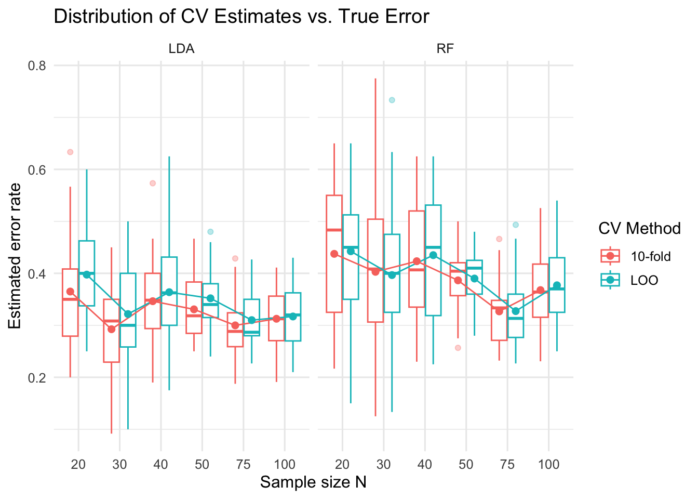

# Data generation function
generate_data <- function(N, seed = NULL) {
if (!is.null(seed)) set.seed(seed)
y <- rbinom(N, size = 1, prob = 0.5) # Bernoulli(0.5)
x1 <- rnorm(N, mean = y - 0.5, sd = 1) # mean depends on y
x2 <- rnorm(N, mean = 0, sd = 1) # mean 0, unit sd
data.frame(
x1 = x1,
x2 = x2,
y = factor(y, levels = c(0,1))
)
}2 Measures of model performance
2.1 Random Forest
Note. Random Forest can be applied to both classification and regression tasks.
In this chapter, we focus only on the classification setting, where the target variable \(y_i \in \{0,1\}\) and each tree outputs class probabilities. The formulas and evaluation metrics described below are all for classification.
Let the dataset be
\[ D=\{(x_i,y_i)\}_{i=1}^N,\quad x_i\in\mathbb{R}^p,\ y_i\in\{0,1\}. \]
A Random Forest is an ensemble of \(B\) classification trees \(\{T_b\}_{b=1}^B\). Each tree is trained using:
2.1.1 Bootstrap sampling
Draw a bootstrap sample \(D_b^*\) from \(D\) by sampling \(N\) observations with replacement.
\[ D_b^* = \{(x_{i_1},y_{i_1}),\dots,(x_{i_N},y_{i_N})\},\quad i_j \sim \text{Unif}\{1,\dots,N\}. \]
2.1.2 Random feature selection
At each internal node, randomly select \(m_{\text{try}}\) features from the full set \(\{1,\dots,p\}\).
Among the possible splits on these features, choose the one that maximizes the impurity decrease:
\[ \Delta \mathcal{I} = \mathcal{I}(\text{parent}) -\sum_{c\in\{\text{left},\text{right}\}} \frac{n_c}{n_{\text{parent}}}\mathcal{I}(c). \]
A common impurity measure is the Gini impurity:
\[ \mathcal{I}_{\text{Gini}}(\text{node}) = 1 - \sum_{k\in\{0,1\}}\hat{\pi}_k^2, \qquad \hat{\pi}_k = \frac{1}{n_{\text{node}}}\sum_{i\in\text{node}}\mathbb{1}(y_i=k). \]
2.1.3 Prediction
Each tree \(T_b\) produces a probability estimate for the positive class:
\[ T_b(x) = \hat{p}_b(y=1\mid x). \]
The Random Forest averages these:
\[ \hat{p}(x) = \frac{1}{B}\sum_{b=1}^B T_b(x), \qquad \hat{y}(x) = \mathbb{1}\{\hat{p}(x) \ge 0.5\}. \]
This reduces variance and improves generalization.
2.2 Ten-Fold Cross-Validation
We split \(D\) into 10 disjoint folds of (approximately) equal size:
\[ D = \bigcup_{k=1}^{10} D_k,\qquad D_i\cap D_j = \varnothing \ (i\neq j). \]
For each fold \(k\):
- Training set: \(D^{(-k)} = D \setminus D_k\)
- Test set: \(D_k\)
Train the Random Forest on \(D^{(-k)}\) to obtain a fitted model \(f_k(\cdot)\).
Use it to produce predictions on all samples in \(D_k\):
\[ \{(\hat{p}_k(x_i),\hat{y}_k(x_i),y_i)\}_{(x_i,y_i)\in D_k}. \]
Let \(M(\cdot)\) be a performance metric (Accuracy, F1, etc).
Define the fold-wise performance as
\[ M_k = M\big(\{(\hat{y}_k(x_i),y_i)\}_{(x_i,y_i)\in D_k}\big). \]
The cross-validated estimate is
\[ \overline{M} = \frac{1}{10}\sum_{k=1}^{10} M_k. \]
2.2.1 Standard error of the 10-fold CV mean (derivation)
Let \(M_1,\dots,M_n\) be the performance values (e.g., accuracy, F1, AUC, or MSE) computed on each of the \(n\) CV folds. For 10-fold CV, \(n=10\).
Step 1 (fold mean).
Define the mean across folds \[
\overline{M} \;=\; \frac{1}{n}\sum_{k=1}^n M_k \, .
\]
Step 2 (sample variance across folds).
Use the unbiased sample variance with Bessel’s correction \[
s^2 \;=\; \frac{1}{n-1}\sum_{k=1}^n \big(M_k-\overline{M}\big)^2 \, .
\]
Step 3 (standard error of the mean).
The standard error of the mean is the standard deviation of \(\overline{M}\).
We estimate it by plugging in the sample standard deviation \(s\): \[
\widehat{\mathrm{SE}}(\overline{M}) \;=\; \frac{s}{\sqrt{n}}
\;=\; \sqrt{\frac{s^2}{n}} \, .
\]
Step 4 (combine Steps 2 and 3).
Substitute \(s^2\) from Step 2: \[
\widehat{\mathrm{SE}}(\overline{M})
\;=\;
\sqrt{ \frac{1}{n}\cdot \frac{1}{n-1} \sum_{k=1}^n \big(M_k-\overline{M}\big)^2 }
\;=\;
\sqrt{ \frac{1}{n(n-1)} \sum_{k=1}^n \big(M_k-\overline{M}\big)^2 } \, .
\]
For 10-fold CV (\(n=10\)), \[ \widehat{\mathrm{SE}}(\overline{M}) \;=\; \sqrt{ \frac{1}{10(10-1)} \sum_{k=1}^{10} \big(M_k-\overline{M}\big)^2 } \, . \]
2.3 Performance Metrics
On a given test set, define confusion matrix counts:
\[ TP=\sum \mathbb{1}\{y_i=1,\hat{y}_i=1\},\quad FP=\sum \mathbb{1}\{y_i=0,\hat{y}_i=1\},\quad TN=\sum \mathbb{1}\{y_i=0,\hat{y}_i=0\},\quad FN=\sum \mathbb{1}\{y_i=1,\hat{y}_i=0\}. \]
Then:
\[ \mathrm{Accuracy}=\frac{TP+TN}{TP+TN+FP+FN}, \qquad \mathrm{Precision}=\frac{TP}{TP+FP}, \qquad \mathrm{Recall}=\frac{TP}{TP+FN}, \]
\[ \mathrm{F1}=2\frac{\mathrm{Precision}\cdot\mathrm{Recall}}{\mathrm{Precision}+\mathrm{Recall}}. \]
AUC is the area under the ROC curve:
\[ \mathrm{AUC} = \Pr(S^+ > S^-) \]
where \(S^+\) and \(S^-\) are the scores from randomly drawn positive and negative examples.
2.4 Combining RF and CV
For each fold \(k\), compute the metrics on the test set \(D_k\).
For example, cross-validated accuracy is
\[ \overline{\mathrm{Acc}} = \frac{1}{10}\sum_{k=1}^{10} \frac{TP_k+TN_k}{TP_k+TN_k+FP_k+FN_k}. \]
Do the same for Precision, Recall, F1, and AUC.
These \(\overline{M}\) values represent the estimated generalization performance of the Random Forest model.
2.5 Simulation study
The following part shows the simulation study comparing LOO vs 10-fold CV for LDA & Random Forest.
2.6 Data generation model
We simulate i.i.d. data \(\{(\mathbf{T}_i, Y_i)\}_{i=1}^n\) as:
\[ Y_i \sim \mathrm{Bin}(1, 0.5), \qquad \mathbf{T}_i \mid Y_i = y_i \;\sim\; N_2\!\left( \begin{bmatrix} y_i - \tfrac{1}{2} \\ 0 \end{bmatrix}, \, I_2 \right), \]
where \(I_2\) is the \(2\times2\) identity and \(N_2\) denotes the bivariate normal. Equivalently, conditional on \(Y_i\), the two features are independent with unit variance;
the first feature’s mean shifts by \(y_i-0.5\), making it informative for \(Y\).
2.6.1 R implementation of data generation
2.7 Methods evaluated
We evaluate two classifiers:
- Linear Discriminant Analysis (LDA)
- Random Forest (RF)
Each model’s generalization error is estimated using two cross-validation approaches:
Leave-one-out cross-validation (LOO-CV):
\[ \widehat{R}_{\text{LOO}} = \frac{1}{n} \sum_{i=1}^n \ell(y_i, \widehat{f}^{(-i)}(x_i)), \] where \(\widehat{f}^{(-i)}\) is trained without observation \(i\).10-fold cross-validation:
\[ \widehat{R}_{10\text{-fold}} = \frac{1}{10}\sum_{k=1}^{10}\frac{1}{|\mathcal{I}_k|}\sum_{i\in\mathcal{I}_k} \ell(y_i,\widehat{f}^{(-k)}(x_i)), \] where folds \(\mathcal{I}_1,\dots,\mathcal{I}_{10}\) partition the sample.
The loss function \(\ell\) is 0–1 loss (misclassification error).
We then compare each estimator to the true error (approximated using a very large independent test set) and summarize performance using:
- Bias: mean difference between estimated CV error and true error.
- Variance: variability of CV estimates across Monte Carlo replications.
- MSE: mean squared error, decomposed as
\[ \text{MSE} = (\text{Bias})^2 + \text{Variance}. \]
2.7.1 Libraries
suppressPackageStartupMessages({
library(MASS) # for LDA
library(randomForest) # for Random Forest
library(dplyr)
library(tibble)
library(purrr)
library(ggplot2)
})2.7.2 Stratified folds, model wrappers, and error computation
make_stratified_folds <- function(y, K = 10, seed = 1) {
set.seed(seed)
y <- factor(y, levels = c("0","1"))
folds <- integer(length(y))
for (lvl in levels(y)) {
idx <- which(y == lvl)
idx <- sample(idx)
splits <- cut(seq_along(idx), breaks = K, labels = FALSE)
folds[idx] <- splits
}
folds
}
predict_model <- function(model_type, train_df, test_df, y_col = "y",
rf_ntree = 500, rf_mtry = NULL) {
if (!is.factor(train_df[[y_col]])) train_df[[y_col]] <- factor(train_df[[y_col]], levels = c("0","1"))
if (!is.factor(test_df[[y_col]])) test_df[[y_col]] <- factor(test_df[[y_col]], levels = c("0","1"))
if (model_type == "lda") {
fit <- MASS::lda(as.formula(paste(y_col, "~ .")), data = train_df)
post <- predict(fit, newdata = test_df)
pred <- factor(ifelse(post$posterior[, "1"] >= 0.5, "1", "0"), levels = c("0","1"))
} else if (model_type == "rf") {
if (is.null(rf_mtry)) rf_mtry <- floor(sqrt(ncol(train_df) - 1))
fit <- randomForest::randomForest(as.formula(paste(y_col, "~ .")),
data = train_df, ntree = rf_ntree, mtry = rf_mtry)
pred <- predict(fit, newdata = test_df, type = "response")
} else stop("Unknown model_type")
pred
}
compute_error <- function(y_true, pred) {
mean(pred != y_true)
}2.7.3 Cross-validation evaluators
evaluate_loo <- function(df, model_type, rf_ntree = 500, rf_mtry = NULL) {
n <- nrow(df)
errs <- numeric(n)
for (i in seq_len(n)) {
test_idx <- i
train_idx <- setdiff(seq_len(n), i)
train_df <- df[train_idx, , drop = FALSE]
test_df <- df[test_idx, , drop = FALSE]
pred <- predict_model(model_type, train_df, test_df, rf_ntree = rf_ntree, rf_mtry = rf_mtry)
errs[i] <- compute_error(test_df$y, pred)
}
mean(errs)
}
evaluate_kfold <- function(df, model_type, K = 10, seed = 1, rf_ntree = 500, rf_mtry = NULL) {
folds <- make_stratified_folds(df$y, K = K, seed = seed)
errs <- numeric(K)
for (k in seq_len(K)) {
test_idx <- which(folds == k)
train_idx <- which(folds != k)
train_df <- df[train_idx, , drop = FALSE]
test_df <- df[test_idx, , drop = FALSE]
pred <- predict_model(model_type, train_df, test_df, rf_ntree = rf_ntree, rf_mtry = rf_mtry)
errs[k] <- compute_error(test_df$y, pred)
}
mean(errs)
}2.8 True error and Monte Carlo evaluation
To evaluate the accuracy of cross-validation estimators, we need a benchmark:
the true generalization error of each model.
For a fitted classifier \(f\), the true error is defined as \[ R(f) = \Pr\{ f(\mathbf{X}) \neq Y \}, \] where \((\mathbf{X}, Y)\) is a new independent draw from the same distribution.
Since this probability cannot be computed exactly, we approximate it using a very large independent test set (e.g., \(N_\text{test} = 50{,}000\)).
We train the model on the entire observed dataset, then evaluate its misclassification rate on the test set.
2.8.1 Function to estimate true error
estimate_true_error <- function(model_type, train_df, N_test = 50000,
rf_ntree = 500, rf_mtry = NULL) {
# Generate large independent test set
test_df <- generate_data(N_test)
pred <- predict_model(model_type, train_df, test_df, rf_ntree = rf_ntree, rf_mtry = rf_mtry)
compute_error(test_df$y, pred)
}one_replication <- function(N, seed = NULL) {
if (!is.null(seed)) set.seed(seed)
df <- generate_data(N)
# LDA
lda_loo <- evaluate_loo(df, "lda")
lda_k10 <- evaluate_kfold(df, "lda", K = 10, seed = 1)
lda_true <- estimate_true_error("lda", df)
# RF
rf_loo <- evaluate_loo(df, "rf")
rf_k10 <- evaluate_kfold(df, "rf", K = 10, seed = 1)
rf_true <- estimate_true_error("rf", df)
tibble::tibble(
N = N,
model = c("LDA","LDA","RF","RF"),
method = c("LOO","10-fold","LOO","10-fold"),
est_err = c(lda_loo, lda_k10, rf_loo, rf_k10),
true_err = c(lda_true, lda_true, rf_true, rf_true)
)
}set.seed(20250925)
one_replication(40)# A tibble: 4 × 5
N model method est_err true_err
<dbl> <chr> <chr> <dbl> <dbl>
1 40 LDA LOO 0.325 0.323
2 40 LDA 10-fold 0.285 0.323
3 40 RF LOO 0.425 0.333
4 40 RF 10-fold 0.38 0.3332.9 Simulation Setup
The code below runs a Monte Carlo simulation across multiple sample sizes. It defines a set of sample sizes (Ns) and the number of replications (R=20) to run for each, sets a random seed for reproducibility, and initializes an empty list to store results. For each sample size (N) and replication (r), the function one_replication(N) is called to perform a single experiment, the output is tagged with the replication index, and then appended to the results list. In the end, results_list contains all simulated outcomes across every combination of sample size and replication, providing the data needed for further summarization and analysis.
Ns <- c( 20, 30, 40, 50, 75, 100)
R <- 20 # increase for tighter Monte Carlo precision
set.seed(123)
results_list <- list()
for (N in Ns) {
for (r in 1:R) {
res <- one_replication(N)
res$rep <- r
results_list <- append(results_list, list(res))
}
}2.10 Summary
results <- dplyr::bind_rows(results_list)
ggplot(results, aes(x = factor(N), y = est_err, color = method)) +
geom_boxplot(outlier.alpha = 0.3, position = position_dodge(width = 0.8)) +
stat_summary(fun = mean, geom = "line", aes(group = method),
position = position_dodge(width = 0.8)) +
stat_summary(fun = mean, geom = "point", aes(group = method),
position = position_dodge(width = 0.8), size = 2) +
facet_wrap(~ model) +
labs(
title = "Distribution of CV Estimates vs. True Error",
x = "Sample size N",
y = "Estimated error rate",
color = "CV Method"
) +
theme_minimal(base_size = 12)